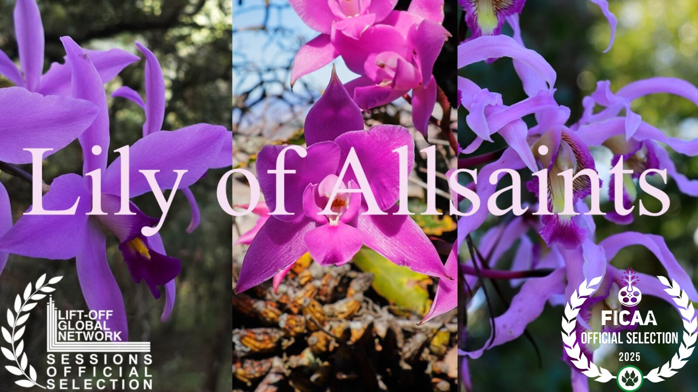

▶
Lily of Allsaints
The sacred orchids of Mexico — Laelia anceps on the altars of the Day of the Dead, the cloud forests where it still grows wild, and the people who have woven it into a thousand years of ceremony.
Best Feature Environmental Documentary, FICAA Mexico City, 2025